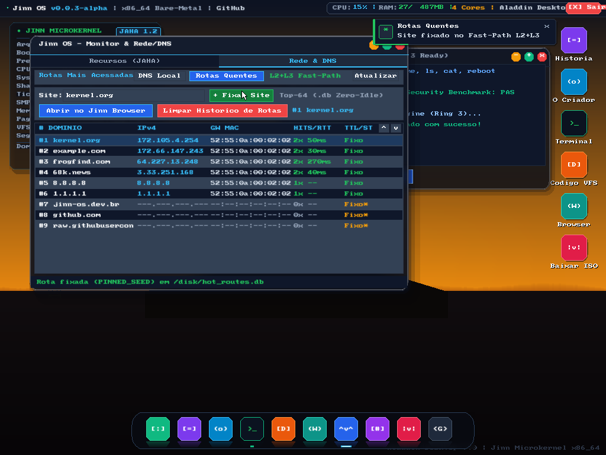
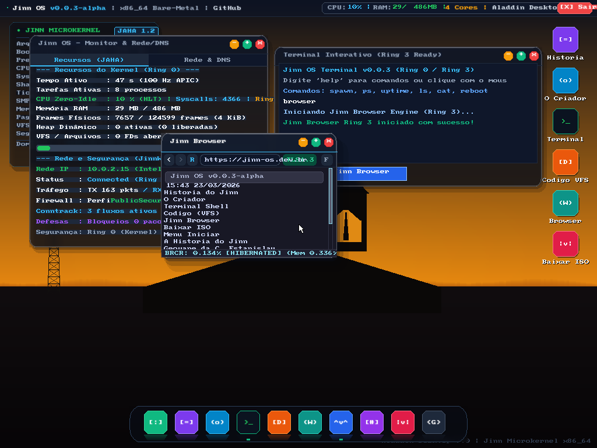

Jinn Engineering Observatory: Arquitetura Modular, Matriz de IP, Fronteira Honesta e Aplicações Reais
Um sistema operacional só conquista confiança de engenheiros sêniores e parceiros industriais quando deixa de prometer substituição universal e passa a expor componentes auditáveis, matriz jurídica cristalina e separação estrita entre o que já é reproduzível e o que permanece em pesquisa.
1. O Problema Levantado: Visibilidade, Atrito de Adoção e Ruído Documental
Ao auditar os três repositórios públicos do projeto (Jinn_Project, Aladdin e jhcs-rs), identificamos quatro pontos críticos que dificultavam a avaliação imediata por arquitetos de hardware, avaliadores de bolsas internacionais e departamentos jurídicos:
- Atrito de entrada ("Tudo ou Nada"): Apresentar apenas um microkernel completo cria barreira de substituição quase intransponível para equipes Linux/Windows que podem testar bibliotecas portáveis em minutos.
- Ruído de documentos históricos na vitrine: Propostas antigas de tokenomics Web3 (
JINN_TOKEN_PROPOSAL.mde auditorias legadas) dividiam atenção na raiz do repositório com a tese central de computação eficiente e isolada. - Higiene de compatibilidade de licenças no Cargo: Embora o repositório raiz
jhcs-rs/LICENSEdeclareApache-2.0, seus subpacotes vinculáveis pelo daemonGPL-2.0-onlyprecisam preservar a disjunçãoMIT OR Apache-2.0nos manifests individuais para compatibilidade FSF estrita. - Fronteira entre emulação QEMU TCG e silício físico: É indispensável distinguir
0.00% CPU ociosapor escalonamentoHLTorientado a eventos em VM de medições elétricas físicas em Watts/Joules (RAPL/wattímetro).
2. Melhorias Implementadas nos 3 Repositórios e no Portal
Vitrine Unificada & Arquivo Histórico
Reescrevemos README.md e README.en.md em Jinn_Project, Aladdin e jhcs-rs destacando a arquitetura experimental para computação eficiente, isolada em Ring 3 e heterogênea, arquivando artefatos Web3 em docs/archive/ e corrigindo metadados em docs/NLNET_GRANT_APPLICATION_PROPOSAL.md.
Matriz de IP & Fronteira Honesta
Criamos docs/STRATEGY_IP_AND_LICENSING.md (auditoria completa dos Cargo.toml, 0 dependências crates.io no kernel, CLA.md + verificação SPDX em CI) e docs/ENGINEERING_STATUS_AND_LIMITATIONS.md com Tabela A (verificado) vs. Tabela B (experimental).
Radar das 50 Organizações & Brief
Publicamos docs/strategy/OPPORTUNITY_RADAR_50.md pontuando 50 organizações em 6 critérios técnicos mais a 6ª Trilha Aberta (indústria local, universidades e setor público ético) e STRATEGIC_TECHNOLOGY_BRIEF.md em 12 slides técnicos.
Observatory em 6 Bancadas
Estruturamos este portal em 6 bancadas navegáveis (Performance Lab, Efficiency Lab, Compute Lab, Security Lab, Architecture & RFCs e Post-Mortems) com JSON-LD TechArticle/NewsArticle enriquecido com about e mentions.
3. Evidências Visuais de Implementação em Execução
As capturas abaixo comprovam os pilares ativos da Tabela A em emulação x86_64 QEMU (-device e1000, -smp 4), integrando o compositor Ring 3 Aladdin, telemetria SMP per-CPU (Syscall 88), HotRouteTable e navegação HTTPS TLS 1.3 sem dependências C:


4. Aplicações Práticas: Industrial, Doméstica e Servidores
4.1. Uso Industrial & Edge Automação
Interfaces IHM/SCADA, controladores de campo e gateways modulares em hardware x86 de 256 MiB–2 GiB RAM beneficiam-se de contenção de falhas de drivers em Ring 3 (sem kernel panic global), orçamento determinístico JAHA 1.2 (0 bytes discrepancy) e escrita transacional .TMP -> .BAK em FAT32 resistente a quedas de energia, além de licença comercial dedicada Jinn-Commercial-1.0.
4.2. Uso Doméstico, Educacional & Combate ao Descarte Eletrônico
Computadores x86 modestos e estações escolares tornam-se úteis para leitura técnica, terminais didáticos de Rust bare-metal e navegação leve em HTTP/HTTPS/RSS via Aladdin Desktop (SIMD Zero-GPU) e Jinn Browser dentro de envelopes de 64 MiB–256 MiB de RAM, evitando obsolescência forçada por sistemas operacionais inchados.
4.3. Uso em Servidores, Appliances & Cargas Híbridas Host (`jhcs-rs`)
O perfil headless SimbadServer (quantum de 50 ms, cache VFS 32 slots WriteBack, firewall JinnWall PublicSecure, economia de ~12 MiB sem GUI) junto com HotRouteTable L2/L3 e DNS 3 camadas atende appliances auditáveis, enquanto o broker jhcs-rs sob Apache-2.0 já pode ser integrado hoje em servidores Linux/Windows para rotear tarefas entre CPU escalar, AVX2 SIMD e GPUs wgpu.
5. Limitações Conhecidas & Próximos Passos
Conforme detalhado na Tabela B de docs/ENGINEERING_STATUS_AND_LIMITATIONS.md, permanecem como próximos marcos experimentais: transição completa do escalonador para LAPIC One-Shot tickless, medição elétrica física em Watts/Joules (RAPL/wattímetro) em silício bare-metal, suítes comparativas idênticas contra Linux e execução de código ARM64/RISC-V além do x86_64. Na próxima Frente do plano, executaremos os benchmarks reproduzíveis de ponto de equilíbrio (breakeven) no jhcs-rs para o Compute Lab.
Jinn Engineering Observatory • Open Collaboration
Applicable Ecosystems & Open Collaboration
Conexões arquiteturais deste estudo com domínios industriais, pesquisa científica e infraestrutura auditável:
Chamada Aberta: Indústria Local, Academia & Setor Público Eticamente Responsável
Convidamos empresas regionais de automação industrial e integradores, universidades e grupos de pesquisa em sistemas operacionais e projetos públicos/governamentais eticamente responsáveis (com transparência e código auditável) a reproduzirem estes experimentos em bancada física, propor workloads comparativos ou avaliar pilotos com o Jinn OS e o JHCS.
![[Valid RSS]](/valid-rss-rogers.png "Validate my RSS feed")